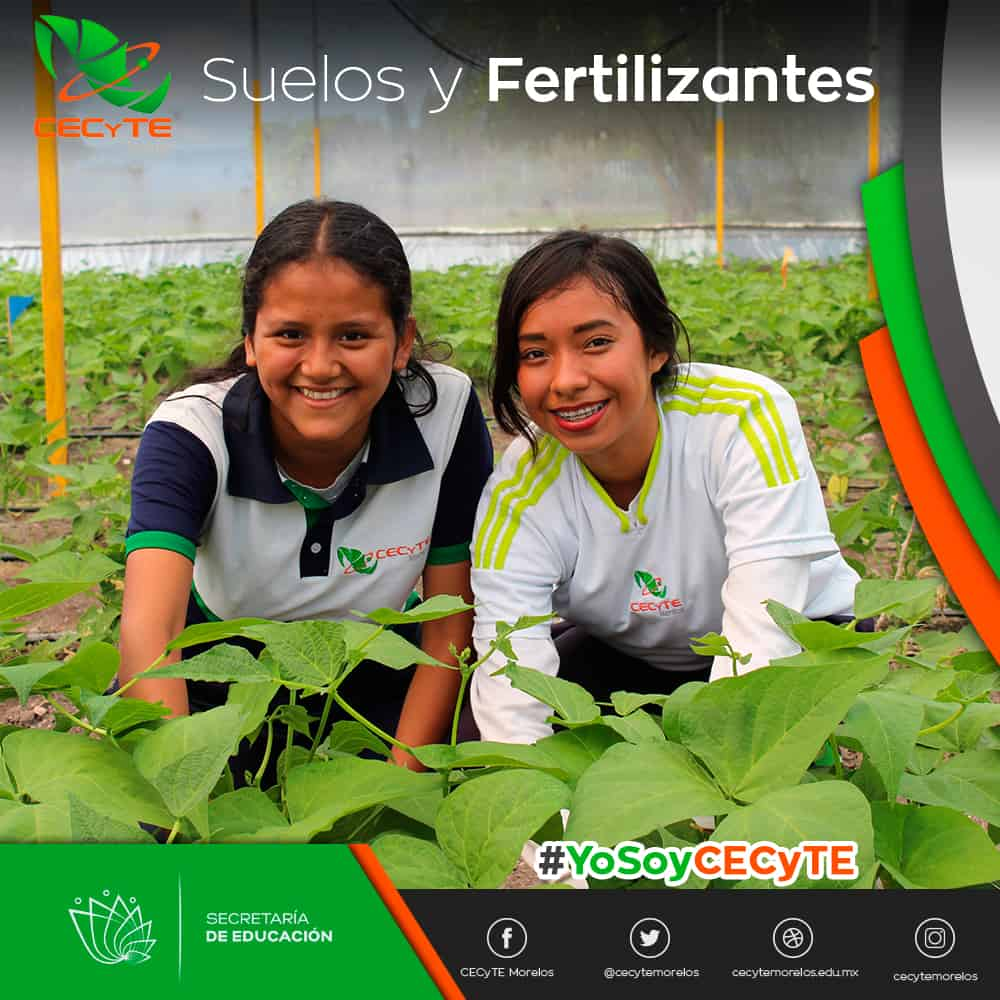

TECNICO EN SUELOS Y FERTILIZANTES
Clave 361100007-13
¿Quién es un Técnico en Suelos y Fertilizantes?
Es un técnico profesionista especializado en realizar actividades dirigidas a recibir una formación integral en el auxilio y análisis de suelos, y tejidos vegetales así mismo aplicar nutrientes a los cultivos para mejorar rendimientos en la producción, desarrolla habilidades que les permiten controlar plagas y enfermedades en los cultivos, adquiriendo también una preparación en la elaboración de paquetes tecnológicos de producción agrícola, producir plantas, resolver problemas relacionados con el uso de los suelos en diferentes competencias como: manejar la nutrición de cultivos, controlar plagas, enfermedades y malezas de los cultivos; establecer prácticas de conservación de suelos y producir plantas.
Como Técnico en Suelos y Fertilizantes estarás capacitado para:
-

Analizar suelos y plantas para conocer su estado nutritivo.
- Nutrir cultivos con el objeto de incrementar rendimientos.
- Controlar plagas, enfermedades y malezas en los cultivos para mejorar su productividad.
- Realizar prácticas de conservación de suelo para mantener su fertilidad.
- Producir plantas para la propagación de cultivos.
¿Dónde podrás trabajar como Técnico en Suelos y Fertilizantes?
Podrás laborar en empresas agropecuarias; dependencias como SAGARPA, INIFAP, SEDESOL, Sanidad Vegetal, Bancos y Cajas Agrarias, Secretarías de Desarrollo Agrario municipales y estatales, productores agrícolas particulares, entre otros; en los cuales podrás desarrollar funciones como: incrementar la producción de los cultivos, mediante corrección de deficiencias nutricionales, manejo de productos agroquímicos, prácticas de conservación del suelo y producción de plantas.